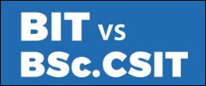
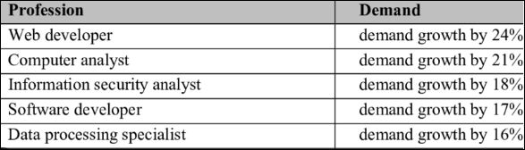

BSc.CSIT vs BIT | Which One is Better & Why ?
 In this blog post, we'll be covering the most important aspects of BSc.CSIT (Bachelors of Science in Computer Science & Imformation Technolory)
& BIT ( Bachelors in Information Technology). The post possesses all about these two popular subjects
and will help you guide and differentiate between BSc.CSIT & BIT.
Moreover, If you want to learn
about the scopes of BSC.CSIT, Click the button below :
Click Here
What is BIT ? Is it worth studying BIT in Nepal ?
BIT(Bachelors in Information Technology) is an integrated course offered by Tribhuvan University, Purbanchal University and various other universities in Nepal. There are number of colleges with the affiliation to foreign universities in Kathmandu Valley. BIT is the abbreviation of Bachelors of Information Technology that accommodate the practical as well as theoretical knowledge for the students who are interested in the technology sector.
Scope of BIT Graduates in Nepal & Worldwide
BIT students can work in the sectors of Web Administration as well in Network Management. The emerging demand of the technical members in the organization can help students to persue their carrier in IT fields. The conceptual mind of youths with practical knowledge can boost the growth of the product or organization in great pace. So, the modern world is in need of these people. This is what makes BIT one of the fine and preferred course in today’s generation. The course will allow the students to a diverse sector of information and communication industry as it is compiled with the study of computer programing, management, mathematics, data administration and so on
What is BSc.CSIT ? Is it worth studying BSc.CSIT in Nepal ?
CONTENT : Bachelors of Science in Computer Science and Information Technology (BSc. CSIT)
is a four year course affiliated to Tribhuvan University designed to provide the student
with all sorts of knowledge in the field of Information
Technology and Computing. Currently 57 Colleges offers B.Sc CSIT program in Nepal.
The mission of the BSc.CSIT course is to prepare the students to pursue career
advancement in the field of IT. At the completion of this degree,
a student will be able to design the real world e-media products or create technical
solutions to hardware and software problems, depending on the chosen area of specialization and electives.
Many students are confused about BSc.CSIT & most of them have same queries
regarding BSc.CSIT , whether to study or not. Focusing on these questions, we've answered
most of your queries below.
1. Why to persue BSc.CSIT Degree ?
2. How's its Market Demand & Supply ?
- Boosts in-depth understanding and experience with computer systems.
- Offers Technical knowledge required for an IT professionals to handle multi-tasking situations.
- Yields Functional knowledge of Hardware system and necessary knowledge of computer software.
- Builds up the skills essential for professionals researchers, IT managers, Systems Analysts, Network Administrator, etc.
- CSIT graduates have a prosperous career opportunity at different government, non-government, private and public organizations, like software companies, telecommunications, computer networking companies etc
Demand of an IT personnel is high in the market & is expected to grow in upcoming years. Not only this, Due to faster advancement in e-commerce , people with the knowledge in their respective fields of Information Technology have greater chances to get appointed by those companies. One can start his/her own startups and build their own projects with the knowledge in IT fields. CSIT graduates who have some knowledge and ideas about their respective IT related fields can easily create their own innovations and sell in the market.
Why To Choose BIT Over BSc.CSIT ? How is BIT Better Than CSIT ?
BSc.CSIT & BIT are both IT related subjects. Though they may be different syllabus
in the education systems in case of Nepal,they possess almost same future prospects and opportunities.
A student with the knowledge in any of those two subjects can acquire the same job with same salary expectations.
Though BIT is a foreign course and BSc.CSIt is a Nepalese course,they have same future prospects.
If you are a passionate person and want to acquire a good carrier,you can choose any of these two subjects
but the key point is that you need to be skillful to achieve a good carrier ahead.
The main aim of BIt course is to allow the students other than science faculty to involve in IT sector
without any requirement of physics,chemistry in 10+2. You can study any subjects,but BIT colleges are kindof
limited in number wholeover Nepal.
FAQ'S
- How to create a FREE Website with FREE Domain & Hosting ?
- What is the Minimum Website Pages For ADSENSE Approval ?
- How to Earn Money Online in India ?
- How to Earn Money Online in Nepal ?
- Can I click my own ads in my website ?
- What is the best way to earn money online for students ?
- Can I click my AD's from others phones and earn more money ?